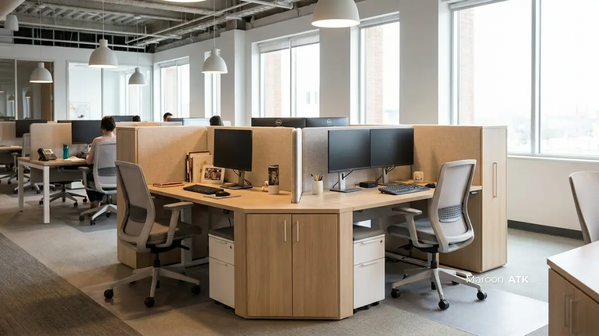

Cara Menyusun Anggaran Pengadaan Furniture Kantor Custom Berkualitas
Anggaran pengadaan furniture kantor custom dapat disusun secara efisien dengan memetakan fungsi ruang, memilih material tepat sasaran (seperti kombinasi multiplek dan MDF), mengombinasikan item custom dengan produk pabrikan (ready stock), serta memperhitungkan regulasi logistik khusus di lima kota besar utama: Jakarta, Surabaya, Malang, Denpasar, dan Makassar.
Harga furniture custom sering kali berfluktuasi ketika diajukan oleh kontraktor interior konvensional. Hal ini kerap membuat tim procurement dan General Affairs kesulitan menjaga Rencana Anggaran Biaya (RAB) tetap realistis dan sesuai alokasi CapEx perusahaan. Padahal, dengan kerangka penyusunan anggaran yang terstruktur dan terukur, pengadaan interior kantor berkualitas premium dapat dicapai secara hemat dan efisien.
Apa Saja Langkah Menyusun Anggaran Pengadaan Furniture Kantor Custom?
Langkah menyusun anggaran pengadaan furniture kantor custom meliputi pemetaan fungsi ruang, pemilihan material yang tepat sasaran, kombinasi custom dan pabrikan, serta alokasi untuk faktor ergonomi:
Pemetaan Fungsi dan Luas Ruang
Langkah pertama sebelum menyusun lembar RAB adalah memetakan zoning aktivitas di kantor. Ruang dengan tata letak terbuka (open-plan) yang memanfaatkan konfigurasi workstation modular 4-cluster atau 6-cluster terbukti mampu menghemat kebutuhan luas tapak lantai hingga 30 persen dibanding meja individual konvensional.

Konfigurasi meja workstation modular 4-cluster memaksimalkan efisiensi ruang kerja terbuka, dilengkapi partisi akustik dan jalur kabel tersembunyi.
Pemilihan Material yang Tepat Sasaran
Kualitas material menentukan durabilitas pemakaian dan nilai penyusutan aset. Untuk area dengan risiko kelembapan tinggi seperti pantry atau area dekat toilet kantor, alokasikan anggaran untuk bahan multiplek (plywood) berlapis HPL yang tahan air. Sementara itu, untuk panel dekoratif dinding atau ambalan buku ringan, penggunaan engineered wood seperti Medium Density Fiberboard (MDF) dapat menghemat anggaran hingga 20–35%.
Kombinasi Custom dan Pabrikan
Hindari membuat semua item secara custom dari nol. Untuk menekan RAB tanpa mengorbankan kualitas estetika, gabungkan furniture custom, misalnya meja resepsionis atau ruang direktur, dengan produk ready stock berbahan ergonomis untuk kebutuhan staf sehari-hari.
Alokasi Faktor Ergonomi Sebagai Investasi
Anggaran furniture harus memperhitungkan kesehatan karyawan. Kursi dan meja yang tidak sesuai standar ergonomi berisiko memicu penurunan produktivitas dan peningkatan absensi karena nyeri punggung.
Setelah keempat langkah dasar tersebut, tim procurement sebaiknya juga menyusun daftar prioritas ruang. Tidak semua area kantor membutuhkan furniture custom dengan spesifikasi tinggi; ruang penyimpanan arsip misalnya, dapat menggunakan rak pabrikan standar, sementara anggaran lebih besar dialokasikan untuk area yang sering dilihat klien atau tamu, seperti lobi dan ruang rapat. Urutan prioritas ini membantu RAB tetap proporsional dan tidak habis pada item yang sebenarnya tidak berdampak besar pada operasional maupun citra perusahaan.
Bagaimana Pertimbangan Anggaran Pengadaan Furniture Kantor di Jakarta?
Anggaran pengadaan furniture kantor di Jakarta perlu memperhitungkan regulasi gedung perkantoran Grade A/B serta akses loading dock yang memengaruhi jadwal dan biaya instalasi.
Pengelola gedung perkantoran di kawasan seperti SCBD dan Sudirman umumnya melarang aktivitas instalasi pada jam kerja pukul 08.00 hingga 17.00 WIB, sehingga tim procurement perlu menyiapkan jadwal kerja lembur malam hari atau akhir pekan, termasuk kemungkinan deposit izin kerja atau fit-out deposit.
Volume produk seperti workstation juga perlu disesuaikan dengan kapasitas lift barang gedung agar proses instalasi tidak terhambat.
Bagaimana Pertimbangan Anggaran Pengadaan Furniture Kantor di Surabaya?
Anggaran pengadaan furniture kantor di Surabaya umumnya mempertimbangkan jarak pengiriman dari pusat produksi serta kebutuhan ruang kerja korporat dan instansi di kawasan bisnis kota tersebut.
Sebagai kota bisnis terbesar kedua di Indonesia, kebutuhan furniture kantor di Surabaya banyak berasal dari perusahaan swasta dan kantor cabang korporat. Perencanaan anggaran sebaiknya turut memperhitungkan waktu pengiriman antarkota agar jadwal instalasi tidak mengganggu operasional harian kantor.
Bagaimana Pertimbangan Anggaran Pengadaan Furniture Kantor di Malang?
Anggaran pengadaan furniture kantor di Malang umumnya dipengaruhi oleh kebutuhan institusi pendidikan dan pemerintahan daerah yang cenderung memprioritaskan efisiensi ruang dan durabilitas material.
Banyak kebutuhan furniture kantor di Malang datang dari kampus dan instansi pemerintah daerah, sehingga pemilihan material yang tahan lama seperti plywood untuk area yang sering digunakan menjadi pertimbangan penting agar furniture tidak perlu sering diganti.
Bagaimana Pertimbangan Anggaran Pengadaan Furniture Kantor di Denpasar?
Anggaran pengadaan furniture kantor di Denpasar perlu mempertimbangkan faktor kelembapan udara pesisir yang memengaruhi pemilihan material tahan air untuk furniture kantor.
Kondisi cuaca di wilayah pesisir seperti Denpasar membuat pemilihan material tahan lembap, misalnya plywood untuk area pantry atau ruang yang dekat dengan sirkulasi udara luar, menjadi bagian penting dari perencanaan anggaran agar furniture lebih awet.
Bagaimana Pertimbangan Anggaran Pengadaan Furniture Kantor di Makassar?
Anggaran pengadaan furniture kantor di Makassar umumnya mempertimbangkan waktu dan biaya logistik pengiriman dari luar pulau sebagai bagian dari perencanaan RAB.
Sebagai kota hub kawasan timur Indonesia, kebutuhan furniture kantor di Makassar banyak berasal dari instansi pemerintah dan perusahaan swasta yang membutuhkan kepastian jadwal pengiriman. Perencanaan anggaran sebaiknya turut memasukkan estimasi waktu pengiriman logistik agar jadwal instalasi tetap sesuai rencana kerja.
Bagaimana Cara Menekan RAB Furniture Kantor Tanpa Mengorbankan Kualitas?
RAB furniture kantor dapat ditekan tanpa mengorbankan kualitas dengan menghindari penggunaan banyak vendor terpisah dan memilih layanan pengadaan yang terintegrasi dalam satu dokumen legal.
Menyusun anggaran dari berbagai vendor terpisah, seperti tukang interior, toko kursi, dan toko elektronik, justru memicu pembengkakan biaya dan administrasi perpajakan yang rumit.
MAROON ATK menawarkan Layanan One-Stop Procurement, di mana anggaran klien sudah mencakup layanan desain 3D custom furniture secara gratis, instalasi gratis, serta monthly invoicing terpadu dengan dokumen e-Faktur PPN 11 persen yang lengkap. Layanan ini melengkapi kebutuhan pengadaan furniture kantor yang selama ini sering terkendala koordinasi banyak vendor.
Sebelum menyusun RAB, pastikan juga vendor menyediakan layanan desain layout 2D/3D gratis, mencantumkan spesifikasi teknis material secara eksplisit pada Surat Penawaran Harga, serta memberikan jaminan garansi struktural yang jelas. Kelengkapan legalitas vendor, seperti status Pengusaha Kena Pajak dan kemampuan menerbitkan e-Faktur, juga penting agar anggaran tetap sesuai standar akuntansi instansi.
Untuk kebutuhan pengadaan yang lebih luas, MAROON ATK juga melayani kebutuhan ATK kantor serta teknologi interaktif seperti videotron, sehingga seluruh kebutuhan pengadaan kantor dapat terintegrasi dalam satu ekosistem dokumen legal dan penagihan.
Kisaran harga dapat bervariasi tergantung spesifikasi, volume pesanan, dan lokasi pengiriman. Hubungi tim MAROON ATK melalui WhatsApp untuk simulasi RAB furniture kantor custom sesuai kebutuhan Anda.
Pertanyaan yang Sering Diajukan
Langkah pertama adalah memetakan fungsi dan luas ruangan agar jenis furniture dan skema layout, seperti workstation modular, dapat disesuaikan dengan kebutuhan sebelum menyusun RAB.
Tidak selalu, karena kombinasi furniture custom untuk area utama dan produk ready stock untuk kebutuhan staf dapat menekan RAB tanpa mengorbankan kualitas estetika.
Perbedaan biaya umumnya dipengaruhi oleh jarak pengiriman dari pusat produksi, regulasi gedung setempat, serta kebutuhan instalasi yang berbeda di tiap wilayah.

Asher Angelica
Praktisi procurement dan konsultasi interior korporat yang berfokus pada standarisasi material ramah lingkungan (ESG), efisiensi tata ruang kantor, dan tata kelola pengadaan fasilitas B2B di Indonesia.